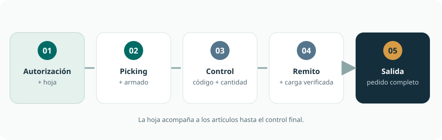
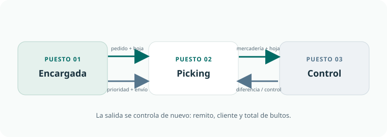

Pedido aprobado
No se empieza a preparar sin aprobación de Administración, Gerencia o Dirección.
DEPÓSITO Y LOGÍSTICA
Guía para conocer el recorrido de Logística: primero el panorama general y después, por puesto, un resumen y los pasos de cada proceso. Para empezar a operar, el tutor entrega accesos y planillas vigentes, demuestra cada tarea y comprueba la práctica antes de habilitarla.
El depósito recibe un pedido aprobado, prepara los artículos, el Controlador comprueba, empaca y etiqueta, la Encargada emite la documentación y el equipo controla la carga antes de la salida.
Elegir mi puesto ↓
TRES PUESTOS, UN MISMO RECORRIDO
Organiza el día, libera y documenta pedidos, gestiona stock y coordina la salida.
Ver procesos del puesto → 02 · 9 procesosControla cada pedido, lo empaca y etiqueta; revisa remitos y carga.
Ver procesos del puesto → 03 · 7 procesosBusca los artículos por ubicación, cuenta las cantidades y entrega el pedido al Controlador para su revisión.
Ver procesos del puesto →PANORAMA DE TAREAS
| Etapa | Encargada de depósito | Controlador | Picking y armado |
|---|---|---|---|
| 1. Autorizar y organizar el día | Abre el día, confirma aprobaciones, busca e imprime la NP y arma la hoja de picking. | — | Toma la hoja de mayor prioridad y planifica su recorrido. |
| 2. Preparar el pedido | Verifica faltantes en PalJet, los registra y pide reposición del depósito externo cuando corresponde. | Apoya la reposición desde reserva con el equipo asignado. | Busca, cuenta y retira los artículos; resuelve lo que no aparece. |
| 3. Controlar | Recibe el resultado del control para seguir. | Controla el pedido línea por línea y lo devuelve si hay diferencias. | Entrega el pedido para control y corrige lo que se le indica. |
| 4. Controlar, empacar y etiquetar | — | Controla el pedido, empaca y etiqueta cada bulto; anota el total en la hoja. | — |
| 5. Documentar | Carga lo preparado en BBJet, usa el código en PalJet y emite el remito. | Cubre la emisión de remitos como respaldo cuando tiene el acceso habilitado. | — |
| 6. Cargar y despachar | Entrega remitos y hoja de control al Controlador. | Controla remitos y carga de la camioneta. | Puede apoyar trasladando los bultos cuando el Controlador lo indica; es una tarea separada del picking normal. |
| 7. Otras tareas del puesto | Gestiona los agregados, traslados y recepciones como procesos independientes del flujo diario del pedido. | — | Recibe y ubica la devolución aprobada como tarea independiente del picking normal. |
| 8. Orden y cierre | Entrega pendientes y deja el depósito listo. | Deja equipos y pasillos en orden. | Deja el sector ordenado y avisa qué quedó en proceso. |
PUNTOS DE ENTREGA ENTRE PUESTOS

REGLAS QUE APLICAN A TODO EL EQUIPO
No se empieza a preparar sin aprobación de Administración, Gerencia o Dirección.
Compará el código del artículo y contá lo que hay. No reemplaces por parecido.
El faltante se registra. Se informa a Ventas solo si el vendedor lo pidió de antemano; el pedido sigue su salida sin esperar una respuesta.
Comprobá el comprobante y el resultado en el sistema antes de repetir una operación.
Para un agregado se prepara otra nota de pedido aprobada. No se reabre el pedido cerrado.
El Controlador controla la carga. El autoelevador lo opera el Controlador; el picker solo en su presencia y con capacitación aplicable.
TODO EL EQUIPO
Al final del turno se cumple este bloque de orden y limpieza y se completa la planilla de control diario del depósito.
CÓMO USAR CADA GUÍA
Leé el resumen y mirá la secuencia ilustrada para ubicar el inicio, los pasos principales y el resultado esperado.
Abrí el desplegable para ver qué necesitás, el paso a paso, cómo saber que está bien y qué hacer si algo sale distinto. Con «Todo el detalle» se abren todos a la vez.
Las guías usan los nombres de pantalla de los procedimientos. Los accesos y las planillas se usan desde las ubicaciones que indique el responsable del puesto.
PALABRAS DEL DEPÓSITO